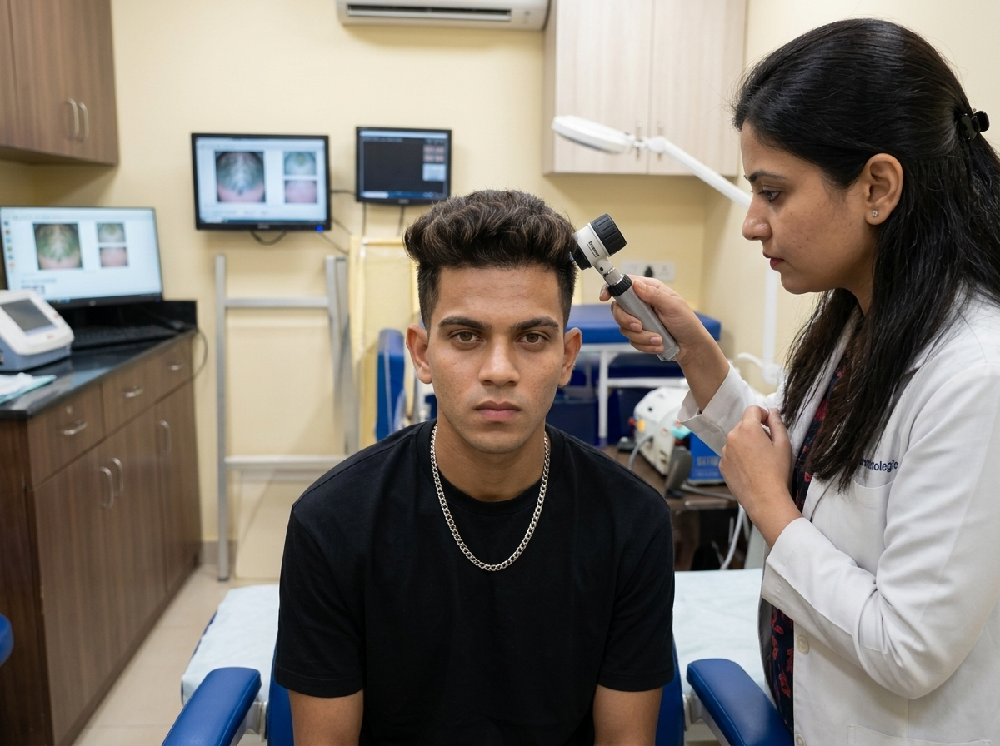
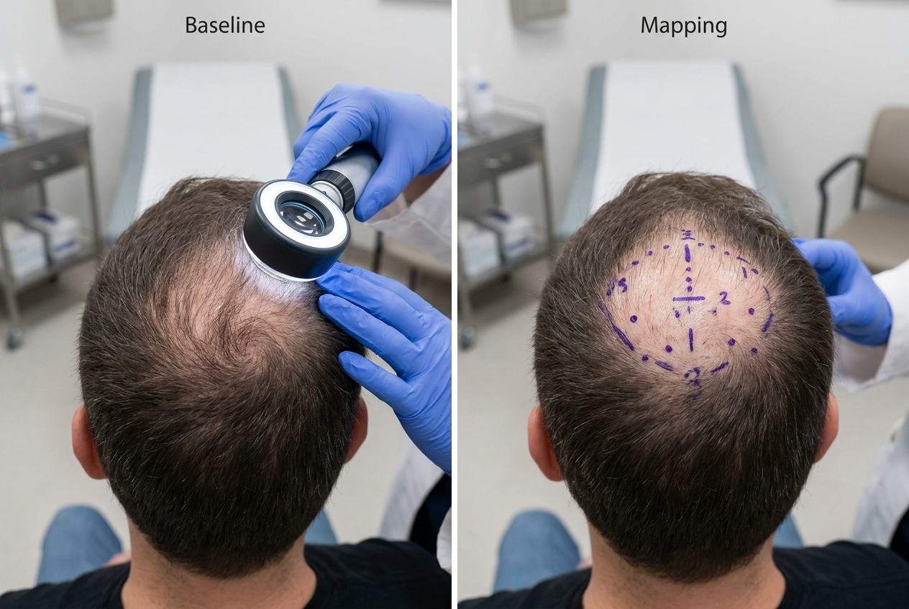
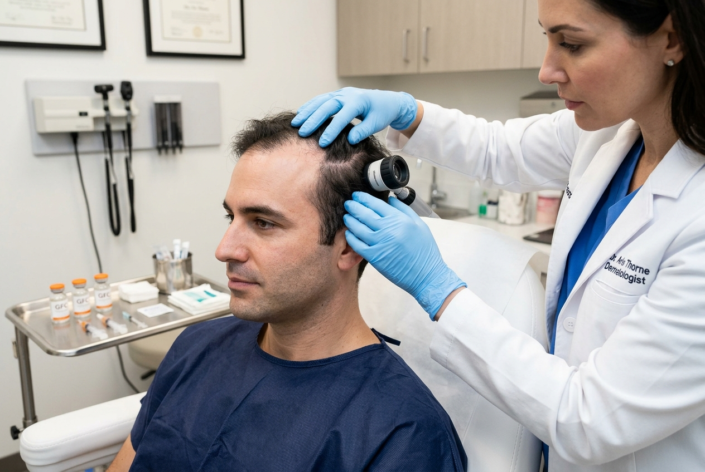
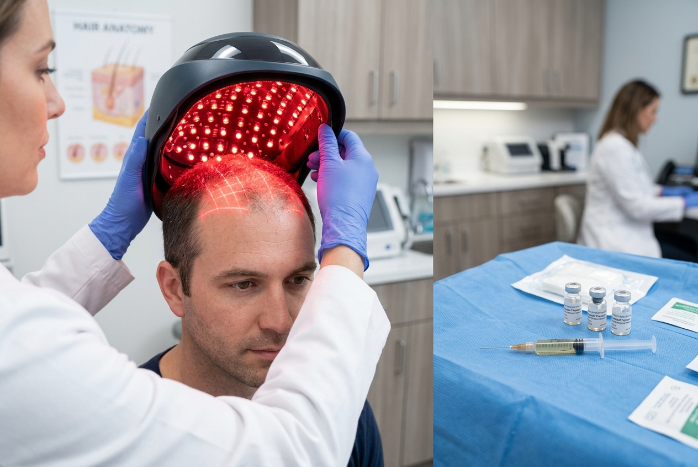

Advanced Clinical Hair Loss Treatment & Restoration in Jaipur
Trichoscopically-guided Medical Therapies (PRP, GFC, Regenerative Mesotherapy & Precision Hair Transplant) tailored to your specific Norwood-Hamilton hair loss stage.

Doctor-Supervised Trichology Assessment
Comprehensive clinical advice using polarized video trichoscopy scalp mapping to evaluate follicular density & scalp sebum.
Patient Hair Loss Treatment & Restoration Stages
Actual clinical progression milestones tracked during our precision hair restoration regimes: from microscopic assessment to full density recovery.

01 Week 0–4: Baseline AssessmentCrown & Vertex Density Mapping
Clinical trichoscopy identifies microscopic follicular miniaturization, sebum buildup, and baseline density profile on the vertex crown before starting growth factor stimulation.

02 Month 2–4: Temporal ActivationFrontal Hairline & Temporal Evaluation
Follicular density starts increasing in temporal recession zones with initial non-shedding follicle reactivation. Bi-weekly growth factor therapy stimulates dormant follicles effectively.

03 Month 4–6: Follicular StimulationFollicle Bio-Stimulation & Laser
Subcutaneous micro-vascular growth factor cycle paired with 650nm Low-Level Light Therapy (LLLT) to thicken root calibers and activate dormant hair roots.
Progressive Density & Stem Thickening
Substantial follicular shaft thickening, visible reduction in crown scalp shine, progressive density expansion across targeted scalp zones.
High-Density Natural Hairline & Full Volume
Complete follicular restoration, natural dense hairline framing, and long-term follicular retention under bi-monthly maintenance.
Hair Loss Manifestations We Treat
Hair loss is multifaceted. Our dermatologists address the biological root causes utilizing tailored biomedical and surgical pathways.
Androgenetic Alopecia
DHT-triggered pattern baldness common in men and women, requiring anti-androgen therapy.
Telogen Effluvium
Sudden diffuse shedding triggered by acute metabolic stress, nutritional deficits, or post-febrile illness.
Crown & Vertex Thinning
Spiral thinning at the crown or vertex resulting in an expanding visible scalp circumference.
Receding Hairline & Temples
M-shaped bilateral temporal loss common in young men that alters facial proportion.
Advanced Modality Comparison
Select the clinical protocol engineered for your scalp pathology, density goals, and timeline.
GFC Concentrate Therapy
Advanced next-generation growth factor concentrate engineered from patient autologous blood, delivering 3x higher platelet growth factors without RBC/WBC contamination.
-
Mechanism: High-purity platelet-derived PDGF, VEGF, TGF-β subcutaneous infusion.
-
Downtime: Zero downtime, immediate resumption of daily activities.
-
Timeframe: 4-6 sessions spaced 28 days apart.
Advanced PRP + Micro-Needling
Platelet-rich plasma paired with precision micro-needling creates synergistic micro-trauma and autologous platelet release to activate dormant follicles.
-
Mechanism: Natural platelet growth factor stimulation + mechanical collagen induction.
-
Ideal For: Early thinning, temporal miniaturization, diffuse shed management.
-
Downtime: 24-48 hours mild scalp tenderness/redness.
Kezza Bio-(FUE) Hair Transplant
Precision automated follicular extraction with sapphire blades and direct implantation. Rebuilds permanent density across the hairline and crown with natural emergence angles.
-
Mechanism: Permanent DHT-resistant occipital donor follicle relocation.
-
Graft Survival Rate: 95%+ transection-free graft survival rate.
-
Permanence: Lifelong organic hair growth with zero maintenance.
What to Expect During Your Treatment Journey
Hair follicles require systematic progression through growth stages. Here is our calibrated 5-step clinical framework to permanent retention.
Trichoscopic Digital Scalp Analysis
High-magnification dermoscopy mapping hair density/cm², scalp sebum levels, follicular caliber variability, miniaturization percentage, and systemic factors health.
Customized Medical Regime & Nutritional Profiling
Comprehensive blood panel analysis (Ferritin, Vitamin D3, Thyroid, Hormonal markers) paired with topical and oral medical anti-DHT blocking treatments reactive protocols.
Growth Factor & Micro-Needling Clinical Sessions
In-clinic biological therapy sessions delivering concentrated growth factor concentrates into target zones to shift dormant follicles into active anagen growth.
Scalp Barrier Optimization & Shaft Thickening
Reduction in daily hair shedding until 90%, visible increase in hair shaft diameter, reduced scalp exposure, and improved scalp barrier integrity.
Permanent Density Monitoring & Maintenance
Trichoscopic photo-monitoring confirming sustained follicular coverage, recalibration to light quarterly institutional maintenance.
Clinical Hair Loss FAQs
Clear scientific answers regarding expectations, timelines, and procedural safety.